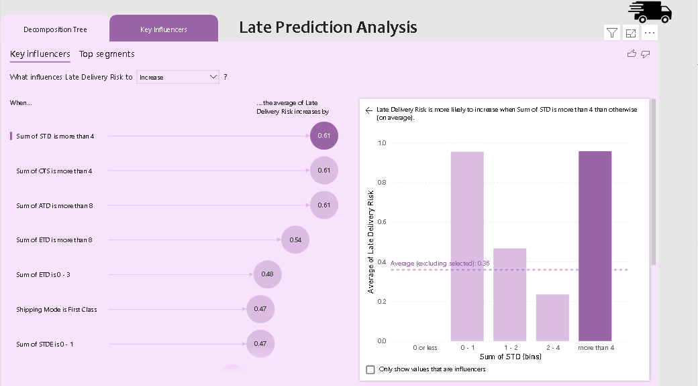

Active Outfitters
This project focuses on analyzing and optimizing delivery performance and predicting late deliveries for Active Outfitters using Power BI. The goal was to leverage transaction data to identify key performance indicators such as sales, profits, order statuses, and shipping efficiency across multiple regions and shipping methods, helping the company improve logistics and customer satisfaction.
Introduction
The logistics and delivery performance play a crucial role in retail businesses. This project aimed to create an interactive dashboard to visualize and analyze key metrics related to Active Outfitters' order fulfillment process. By focusing on shipping modes, delivery statuses, and customer demographics, we aimed to uncover insights that could help optimize delivery strategies and reduce late deliveries.
Data Collection and Preparation
The analysis was based on transaction data, including order details, customer information, product categories, and shipping statuses. The data was cleaned and transformed using Power Query Editor to ensure consistency and accuracy for analysis. Key variables such as shipping mode, late delivery risk, product price, and customer segment were extracted and organized for deeper insights.
Benchmarking and Analysis
The analysis focused on evaluating delivery performance based on the following key areas:
- Sales and profit performance by shipping mode and region.
- Shipping times (order-to-shipping days, shipping-to-delivery days) across different shipping methods.
- Predicting late deliveries based on factors like shipping mode, order status, and transaction type.
Data Analysis and Findings
Shipping Mode Efficiency
The analysis showed that Same Day delivery had the highest profit margins and the fastest delivery times, but it represented a smaller portion of total orders. Meanwhile, First Class and Standard Class had a higher volume of orders with moderate delivery efficiency and lower margins.
Late Delivery Risks
Using Power BI's Key Influencers visual, we identified that First Class shipments were more likely to experience delays, while Same Day deliveries had the least late delivery risk. Transaction types such as CASH and DEBIT were linked to higher rates of late deliveries, while TRANSFER payments had a lower impact on delivery efficiency.

Order Tracking Insights
Insights into order tracking revealed that certain regions had higher incidences of delayed deliveries, especially where shipping distances were greater or during peak seasons. A focused effort on these regions, such as improving stock availability and optimizing delivery routes, could help reduce delays.
Key Performance Indicators (KPIs)
In this project, several KPIs were derived to measure delivery performance:
- OTS (Order to Shipping Days): Measures the time taken from order placement to shipment, helping track how efficiently orders are processed and shipped.
- ATD (Actual Time to Delivery): Measures the actual time it takes from order date to delivery, considering the standard delivery time (STD), and is key for tracking the accuracy of delivery schedules.
- ETD (Estimated Time to Delivery): Reflects the estimated delivery time, accounting for scheduled delays (STDE), which is crucial for comparing against actual delivery times.
- Days Late: This metric calculates the difference between ATD and ETD, highlighting any delays in the delivery process.
- Delivery Date: Tracks the actual date the order was delivered, helping monitor the accuracy of estimated delivery windows.
- Products: Measures the number of unique products per order, helping assess product variety and operational efficiency in processing orders.
- Quantity: Tracks the total number of items per order, which helps calculate order fulfillment rates and assess logistics efficiency.

Recommendations
Based on the analysis, the following recommendations were made:
- Improve delivery efficiency: Focus on optimizing Same Day delivery logistics to meet high demand while maintaining high margins.
- Address late delivery risks: Implement targeted improvements for First Class shipments and evaluate the payment types that contribute to late deliveries.
- Optimize order fulfillment in key regions: Focus on regions with high volumes of delayed deliveries and implement strategies to enhance shipping efficiency.
Conclusion
This project provided valuable insights into the delivery performance and risks at Active Outfitters, offering data-driven recommendations to improve logistics, reduce late deliveries, and increase customer satisfaction. The dashboard serves as a tool to continually monitor and refine delivery strategies for better operational efficiency.
Tools Used
- Power BI
- Power Query Editor
- Excel
- Data Analysis for Retail Transactions